- 00 开篇词 打破四大认知局限，进阶高级性能工程师.md.html
- 01 性能工程：为什么很多性能测试人员无法对性能结果负责？.md.html
- 02 关键概念：性能指标和场景的确定.md.html
- 03 核心分析逻辑：所有的性能分析，靠这七步都能搞定.md.html
- 04 如何构建性能分析决策树和查找瓶颈证据链？.md.html
- 05 性能方案：你的方案是否还停留在形式上？.md.html
- 06 如何抽取出符合真实业务场景的业务模型？.md.html
- 07 性能场景的数据到底应该做成什么样子？.md.html
- 08 并发、在线和TPS到底是什么关系？.md.html
- 09 如何设计全局和定向监控策略？.md.html
- 10 设计基准场景需要注意哪些关键点？.md.html
- 11 打开首页之一：一个案例，带你搞懂基础硬件设施的性能问题.md.html
- 12 打开首页之二：如何平衡利用硬件资源？.md.html
- 13 用户登录：怎么判断线程中的Block原因？.md.html
- 14 用户信息查询：如何解决网络软中断瓶颈问题？.md.html
- 15 查询商品：资源不足有哪些性能表现？.md.html
- 16 商品加入购物车：SQL优化和压力工具中的参数分析.md.html
- 17 查询购物车：为什么铺底参数一定要符合真实业务特性？.md.html
- 18 购物车信息确定订单：为什么动态参数化逻辑非常重要？.md.html
- 19 生成订单信息之一：应用JDBC池优化和内存溢出分析.md.html
- 20 生成订单信息之二：业务逻辑复杂，怎么做性能优化？.md.html
- 21 支付前查询订单列表：如何分析优化一个固定的技术组件？.md.html
- 22 支付订单信息：如何高效解决for循环产生的内存溢出？.md.html
- 23 决定容量场景成败的关键因素有哪些？.md.html
- 24 容量场景之一：索引优化和Kubernetes资源分配不均衡怎么办？.md.html
- 25 容量场景之二：缓存对性能会有什么样的影响？.md.html
- 26 稳定性场景之一：怎样搞定业务积累量产生的瓶颈问题？.md.html
- 27 稳定性场景之二：怎样搞定磁盘不足产生的瓶颈问题？.md.html
- 28 如何确定异常场景的范围和设计逻辑？.md.html
- 29 异常场景：如何模拟不同组件层级的异常？.md.html
- 30 如何确定生产系统配置？.md.html
- 31 怎么写出有价值的性能报告？.md.html
- 我们这个课程的系统是怎么搭建起来的？.md.html
- 结束语 做真正的性能项目.md.html
- 捐赠
19 生成订单信息之一：应用JDBC池优化和内存溢出分析
你好，我是高楼。
在这节课中，我们来看一下生成订单接口的基准场景是什么结果。
你将看到一些重复的问题，比如SQL的问题定位，虽然具体的问题不同，但我们的分析逻辑没有区别，我会简单带过。同时，你也会看到一些新的问题，比如JDBC池增加之后，由于数据量过大导致JVM内存被消耗光；批量业务和实时业务共存导致的锁问题等。这节课，我们重点来看看这样的问题如何进一步优化。
话不多说，开整！
场景运行数据
对于生成订单接口，我们第一次试执行性能场景的结果如下：
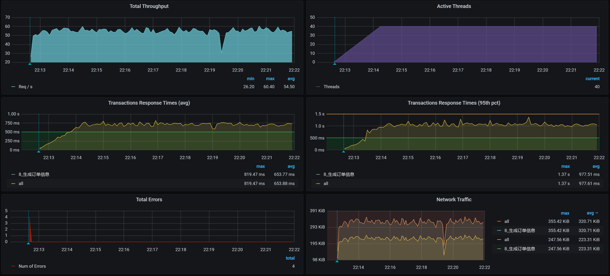
从场景执行的结果来看。40个压力线程只跑出来50多的TPS，响应时间也蹭蹭蹭地跑了近700ms。这显然是一个非常慢的接口了。
从这样的接口来看，我们选择这个项目算是选择对了，因为到处都是性能问题。
下面我们就来一步步分析一下。
架构图
前面我们做过多次描述，画架构图是为了知道分析的路径。所以按照惯例，我们仍然把架构图列在这里。
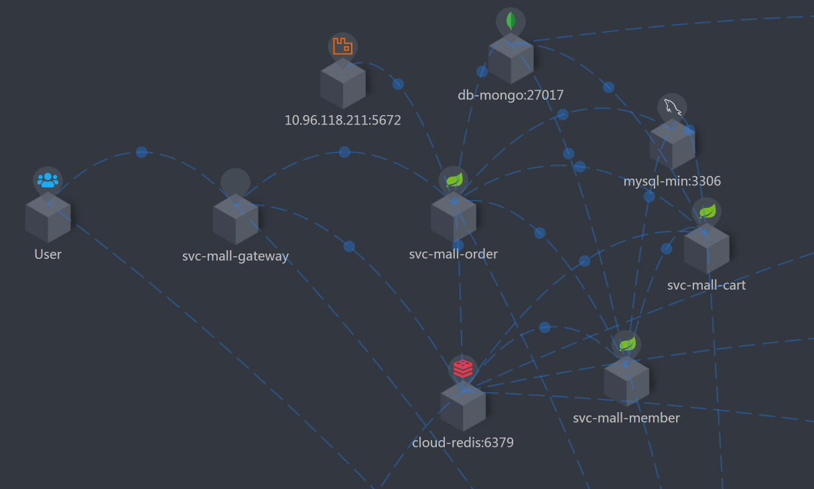
由于这个接口比较复杂，架构图看起来有点乱，我又整了一个简化版本：
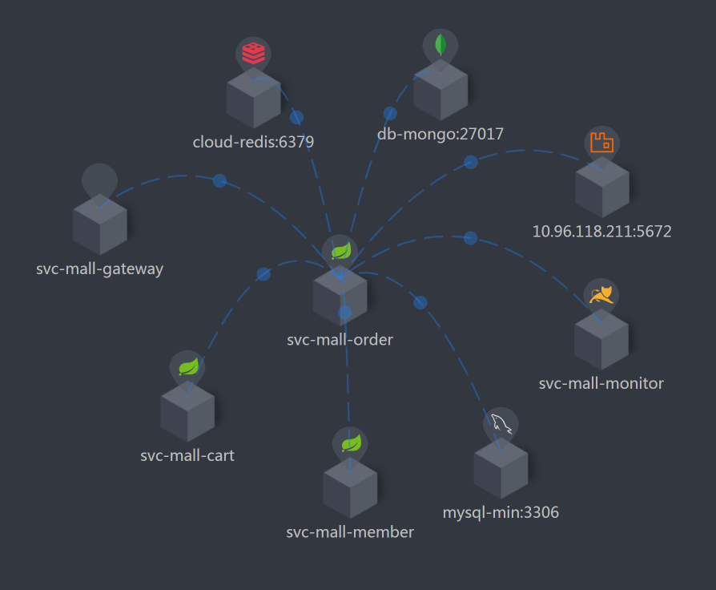
Order服务是这个接口的核心，因此，你可以看到我把Order相关的服务都筛选了出来，这样我们就能很清楚地知道它连接了哪些东西。
下面我们来拆分响应时间。
拆分响应时间
因为在场景运行的时候，我们看到响应时间比较长，所以我们用APM工具来拆分一下：
- Gateway ：
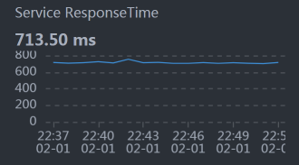
从上图我们就可以看到Gateway上的时间在700ms左右，这与前面的场景数据是可以对上的。
我说明一下，这张小图的采样间隔是分钟，因此，你可能会发现这个曲线和压力工具给出的TPS曲线，在一些细节上对应不起来。不过这没关系，我们更应该关注整体的趋势。
- Order：
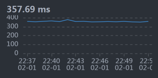
我们前面提到，Order是生产订单信息这个接口的重点，并且它的业务逻辑也非常复杂，因此，我们要多关注这个服务。
从数据上来看，Order的是时间消耗在350毫秒左右，占到整个响应时间的一半。这是我们着重要分析的，而Gateway的转发能力也是要考虑的问题点，只是Gateway上没有逻辑，只做转发，如果是因为数据量大而导致的Gateway转发慢，那我们解决了Order的问题之后，Gateway的问题也就会被解决。所以，我们先分析Order的问题。
所以，我们现在就来分析一下。
第一阶段
全局监控分析
我们先看全局监控：
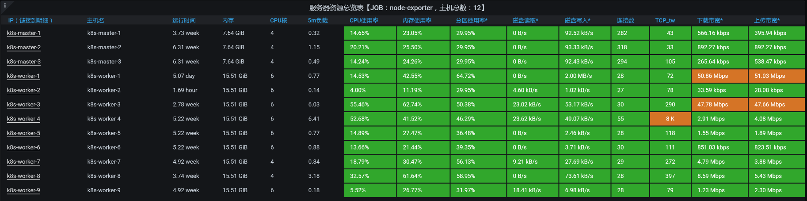
一眼扫过去，啥也没有。既没有明显的CPU资源消耗，也没有明显的网络资源、IO资源瓶颈。
遇到这种情况，我们一定要留意整个链路上有限制的点。什么是有限制的点？比如说，各种池（连接池、等）、栈中的锁、数据库连接、还有数据库的锁之类。其实，总结下来就是一个关键词：阻塞。
我们只要分析出阻塞的点，就能把链路扩宽，进而把资源都用起来。
当然，也有可能在你分析了一圈之后，发现没有任何有阻塞的点，可是资源就是用不上去。这种情况只有一种可能，那就是你分析得还不够细致。因为可能存在阻塞的地方实在太多了，我们只能一步步拆解。
定向监控分析
正所谓“心中常备决策树，让你分析不迷路”。到了定向监控分析这里，按照第4讲中强调的性能分析决策树，我们先来分析Order服务：
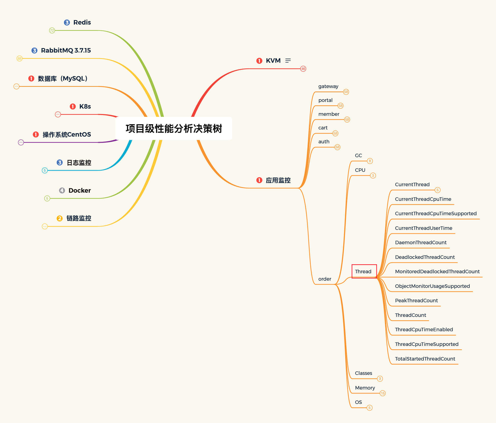
在我分析Order的线程栈信息时，发现在Order的栈中，有大量这样的内容：
"http-nio-8086-exec-421" Id=138560 WAITING on java.util.concurrent.locks.AbstractQueuedSynchronizer$ConditionObject@a268a48
at sun.misc.Unsafe.park(Native Method)
- waiting on java.util.concurrent.locks.AbstractQueuedSynchronizer$ConditionObject@a268a48
at java.util.concurrent.locks.LockSupport.park(LockSupport.java:175)
at java.util.concurrent.locks.AbstractQueuedSynchronizer$ConditionObject.await(AbstractQueuedSynchronizer.java:2039)
at com.alibaba.druid.pool.DruidDataSource.takeLast(DruidDataSource.java:1899)
at com.alibaba.druid.pool.DruidDataSource.getConnectionInternal(DruidDataSource.java:1460)
at com.alibaba.druid.pool.DruidDataSource.getConnectionDirect(DruidDataSource.java:1255)
at com.alibaba.druid.filter.FilterChainImpl.dataSource_connect(FilterChainImpl.java:5007)
at com.alibaba.druid.filter.stat.StatFilter.dataSource_getConnection(StatFilter.java:680)
at com.alibaba.druid.filter.FilterChainImpl.dataSource_connect(FilterChainImpl.java:5003)
at com.alibaba.druid.pool.DruidDataSource.getConnection(DruidDataSource.java:1233)
at com.alibaba.druid.pool.DruidDataSource.getConnection(DruidDataSource.java:1225)
at com.alibaba.druid.pool.DruidDataSource.getConnection(DruidDataSource.java:90)
..........................
at com.dunshan.mall.order.service.impl.PortalOrderServiceImpl$$EnhancerBySpringCGLIB$$f64f6aa2.generateOrder(<generated>)
at com.dunshan.mall.order.controller.PortalOrderController.generateOrder$original$hak2sOst(PortalOrderController.java:48)
at com.dunshan.mall.order.controller.PortalOrderController.generateOrder$original$hak2sOst$accessor$NTnIbuo7(PortalOrderController.java)
at com.dunshan.mall.order.controller.PortalOrderController$auxiliary$MTWkGopH.call(Unknown Source)
..........................
at com.dunshan.mall.order.controller.PortalOrderController.generateOrder(PortalOrderController.java)
..........................
你看，栈信息中有很多getConnection，这明显是Order服务在等数据库连接池。所以，我们要做的就是把JDBC池加大：
原配置：
initial-size: 5 #连接池初始化大小
min-idle: 10 #最小空闲连接数
max-active: 20 #最大连接数
修改为：
initial-size: 20 #连接池初始化大小
min-idle: 10 #最小空闲连接数
max-active: 40 #最大连接数
你可以看到，我在这里并没有把JDBC池一次性修改得太大，主要是因为我不想为了维护连接池而产生过多的CPU消耗。我也建议你在增加资源池的时候，先一点点增加，看看有没有效果，等有了效果后再接着增加。
修改JDBC池后，我们再来看一下压力场景的执行数据：
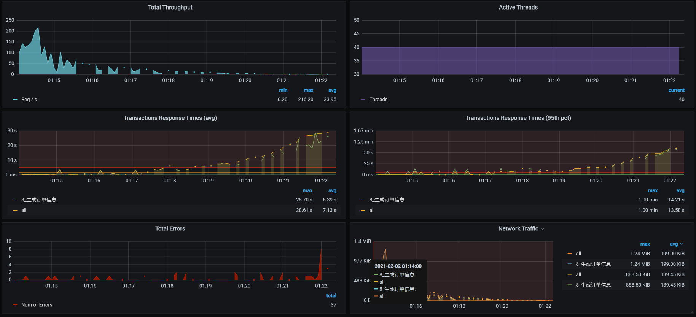
从数据上看，TPS有上升的趋势，并且一度达到了150以上。可是紧接着，TPS就掉下来了，这个时候的响应时间倒是没有明显增加。而且你看，TPS不仅掉下来了，而且还断断续续的，极为不稳定。
此外，我们还可以发现，在后续的压力中不仅有错误信息产生，响应时间也在上升。与此同时，我查看了全局监控的资源，并没有发现太大的资源消耗。既然有错误产生，没二话，我们只能整它！
第二阶段
全局监控分析
因为我们在前面修改了Order的JDBC池，所以在出现新的问题之后，我们先来看一下Order服务的健康状态。在查看Order服务的top时，看到如下信息：
top - 01:28:17 up 19 days, 11:54, 3 users, load average: 1.14, 1.73, 2.27
Tasks: 316 total, 1 running, 315 sleeping, 0 stopped, 0 zombie
%Cpu0 :100.0 us, 0.0 sy, 0.0 ni, 0.0 id, 0.0 wa, 0.0 hi, 0.0 si, 0.0 st
%Cpu1 : 3.0 us, 2.7 sy, 0.0 ni, 93.6 id, 0.0 wa, 0.0 hi, 0.3 si, 0.3 st
%Cpu2 : 3.4 us, 3.4 sy, 0.0 ni, 93.3 id, 0.0 wa, 0.0 hi, 0.0 si, 0.0 st
%Cpu3 : 3.7 us, 2.8 sy, 0.0 ni, 93.5 id, 0.0 wa, 0.0 hi, 0.0 si, 0.0 st
%Cpu4 : 3.6 us, 2.1 sy, 0.0 ni, 93.6 id, 0.0 wa, 0.0 hi, 0.3 si, 0.3 st
%Cpu5 : 2.8 us, 1.8 sy, 0.0 ni, 95.4 id, 0.0 wa, 0.0 hi, 0.0 si, 0.0 st
KiB Mem : 16265992 total, 2229060 free, 9794944 used, 4241988 buff/cache
KiB Swap: 0 total, 0 free, 0 used. 6052732 avail Mem
PID USER PR NI VIRT RES SHR S %CPU %MEM TIME+ COMMAND
29349 root 20 0 8836040 4.3g 16828 S 99.7 27.4 20:51.90 java
1089 root 20 0 2574864 98144 23788 S 6.6 0.6 2066:38 kubelet
悲催的数据还是来了，你看，有一个us cpu达到了100%！这是啥情况？
进入到容器中，我通过 top -Hp和jstack -l 1 两个命令查看进程后发现，原来是VM Thread线程占用了CPU，这个线程是做垃圾回收（GC）的。 既然如此，那我们就来看一下内存的回收状态，查看jstat如下：
[root@svc-mall-order-7fbdd7b85f-ks828 /]# jstat -gcutil 1 1s
S0 S1 E O M CCS YGC YGCT FGC FGCT GCT
0.00 100.00 100.00 100.00 94.86 93.15 168 28.822 93 652.664 681.486
0.00 100.00 100.00 100.00 94.86 93.15 168 28.822 93 652.664 681.486
0.00 100.00 100.00 100.00 94.86 93.15 168 28.822 93 652.664 681.486
0.00 100.00 100.00 100.00 94.86 93.15 168 28.822 93 652.664 681.486
0.00 100.00 100.00 100.00 94.86 93.15 168 28.822 93 652.664 681.486
0.00 100.00 100.00 100.00 94.86 93.15 168 28.822 93 652.664 681.486
0.00 100.00 100.00 100.00 94.86 93.15 168 28.822 93 652.664 681.486
0.00 100.00 100.00 100.00 94.86 93.15 168 28.822 94 659.863 688.685
0.00 100.00 100.00 100.00 94.86 93.15 168 28.822 94 659.863 688.685
0.00 100.00 100.00 100.00 94.86 93.15 168 28.822 94 659.863 688.685
0.00 100.00 100.00 100.00 94.86 93.15 168 28.822 94 659.863 688.685
0.00 100.00 100.00 100.00 94.86 93.15 168 28.822 94 659.863 688.685
0.00 100.00 100.00 100.00 94.86 93.15 168 28.822 94 659.863 688.685
0.00 100.00 100.00 100.00 94.86 93.15 168 28.822 94 659.863 688.685
0.00 100.00 100.00 100.00 94.86 93.15 168 28.822 95 667.472 696.294
0.00 100.00 100.00 100.00 94.86 93.15 168 28.822 95 667.472 696.294
0.00 100.00 100.00 100.00 94.86 93.15 168 28.822 95 667.472 696.294
0.00 100.00 100.00 100.00 94.86 93.15 168 28.822 95 667.472 696.294
0.00 100.00 100.00 100.00 94.86 93.15 168 28.822 95 667.472 696.294
0.00 100.00 100.00 100.00 94.86 93.15 168 28.822 95 667.472 696.294
0.00 100.00 100.00 100.00 94.86 93.15 168 28.822 95 667.472 696.294
0.00 100.00 100.00 100.00 94.86 93.15 168 28.822 95 667.472 696.294
0.00 100.00 100.00 100.00 94.85 93.14 168 28.822 96 674.816 703.638
0.00 100.00 100.00 100.00 94.85 93.14 168 28.822 96 674.816 703.638
0.00 100.00 100.00 100.00 94.85 93.14 168 28.822 96 674.816 703.638
0.00 100.00 100.00 100.00 94.85 93.14 168 28.822 96 674.816 703.638
0.00 100.00 100.00 100.00 94.85 93.14 168 28.822 96 674.816 703.638
0.00 100.00 100.00 100.00 94.85 93.14 168 28.822 96 674.816 703.638
0.00 100.00 100.00 100.00 94.85 93.14 168 28.822 96 674.816 703.638
从上面的数据来看，FullGC在不断出现，但是又回收不了内存，这个问题就严重了。
你要注意，对于这种情况，我们正常的判断逻辑应该是：一个实时的业务系统就算是有FullGC，也应该是每次都回收到正常的状态。如果HEAP内存确实不够用，那我们可以增加。但是如果HEAP一直在减少，直到FullGC也回收不了，那就有问题了。
因此，对于这样的问题，我们要做两方面的分析：
- 内存确实在被使用，所以，FullGC回收不了。
- 内存有泄露，并且已经泄露完，所以，FullGC无法回收。
那么接下来，我们在做定向监控分析时就要从这两个角度来思考。
定向监控分析
既然内存已经满了，我们就执行一下jmap -histo:live 1|head -n 50，来看看占比相对较多的内存是什么：
[root@svc-mall-order-7fbdd7b85f-ks828 /]# jmap -histo:live 1|head -n 50
num #instances #bytes class name
----------------------------------------------
1: 74925020 2066475600 [B
2: 2675397 513676056 [[B
3: 2675385 85612320 com.mysql.cj.protocol.a.result.ByteArrayRow
4: 2675386 42806176 com.mysql.cj.protocol.a.MysqlTextValueDecoder
5: 246997 27488016 [C
6: 80322 16243408 [Ljava.lang.Object;
7: 14898 7514784 [Ljava.util.HashMap$Node;
8: 246103 5906472 java.lang.String
9: 109732 3511424 java.util.concurrent.ConcurrentHashMap$Node
10: 37979 3342152 java.lang.reflect.Method
11: 24282 2668712 java.lang.Class
12: 55296 2654208 java.util.HashMap
13: 15623 2489384 [I
14: 81370 1952880 java.util.ArrayList
15: 50199 1204776 org.apache.skywalking.apm.agent.core.context.util.TagValuePair
16: 36548 1169536 java.util.HashMap$Node
17: 566 1161296 [Ljava.util.concurrent.ConcurrentHashMap$Node;
18: 28143 1125720 java.util.LinkedHashMap$Entry
19: 13664 1093120 org.apache.skywalking.apm.agent.core.context.trace.ExitSpan
20: 23071 922840 com.sun.org.apache.xerces.internal.dom.DeferredTextImpl
21: 35578 853872 java.util.LinkedList$Node
22: 15038 842128 java.util.LinkedHashMap
23: 52368 837888 java.lang.Object
24: 17779 711160 com.sun.org.apache.xerces.internal.dom.DeferredAttrImpl
25: 11260 630560 com.sun.org.apache.xerces.internal.dom.DeferredElementImpl
26: 18743 599776 java.util.LinkedList
27: 26100 598888 [Ljava.lang.Class;
28: 22713 545112 org.springframework.core.MethodClassKey
29: 712 532384 [J
30: 6840 492480 org.apache.skywalking.apm.agent.core.context.trace.LocalSpan
31: 6043 483440 org.apache.skywalking.apm.dependencies.net.bytebuddy.pool.TypePool$Default$LazyTypeDescription$MethodToken
32: 7347 352656 org.aspectj.weaver.reflect.ShadowMatchImpl
33: 6195 297360 org.springframework.core.ResolvableType
34: 6249 271152 [Ljava.lang.String;
35: 11260 270240 com.sun.org.apache.xerces.internal.dom.AttributeMap
36: 3234 258720 java.lang.reflect.Constructor
37: 390 255840 org.apache.skywalking.apm.dependencies.io.netty.util.internal.shaded.org.jctools.queues.MpscArrayQueue
38: 7347 235104 org.aspectj.weaver.patterns.ExposedState
39: 5707 228280 java.lang.ref.SoftReference
40: 3009 216648 org.apache.skywalking.apm.agent.core.context.TracingContext
41: 13302 212832 org.apache.ibatis.scripting.xmltags.StaticTextSqlNode
42: 8477 203448 org.apache.skywalking.apm.dependencies.net.bytebuddy.pool.TypePool$Default$LazyTypeDescription$MethodToken$ParameterToken
43: 5068 162176 java.util.concurrent.locks.ReentrantLock$NonfairSync
44: 2995 143760 org.apache.skywalking.apm.agent.core.context.trace.TraceSegmentRef
45: 2426 135856 java.lang.invoke.MemberName
46: 3262 130480 java.util.WeakHashMap$Entry
47: 1630 130400 org.apache.skywalking.apm.agent.core.context.trace.EntrySpan
[root@svc-mall-order-7fbdd7b85f-ks828 /]#
在分析内存时，我们可以过滤掉java自己的对象，只看和业务相关的对象。从上面的第3、4条可以看出，com.mysql.cj.protocol和SQL相关，那我们就到innodb_trx表中去查一下，看看有没有执行时间比较长的SQL。
在查询过程中，我们看到了这样一条SQL：
select id, member_id, coupon_id, order_sn, create_time, member_username, total_amount pay_amount, freight_amount, promotion_amount, integration_amount, coupon_amount discount_amount, pay_type, source_type, status, order_type, delivery_company, delivery_sn auto_confirm_day, integration, growth, promotion_info, bill_type, bill_header, bill_content bill_receiver_phone, bill_receiver_email, receiver_name, receiver_phone, receiver_post_code receiver_province, receiver_city, receiver_region, receiver_detail_address, note, confirm_status delete_status, use_integration, payment_time, delivery_time, receive_time, comment_time modify_time from oms_order WHERE ( id = 0 and status = 0 and delete_status = 0 )
进而我又查询了这个语句，发现涉及到的数据有4358761条，这显然是代码写的有问题。那我们就去查看一下在代码中，哪里调用了这个SQL。
通过查看代码，看到如下逻辑：
example.createCriteria().andIdEqualTo(orderId).andStatusEqualTo(0).andDeleteStatusEqualTo(0);
List<OmsOrder> cancelOrderList = orderMapper.selectByExample(example);
这段代码对应的select语句是：
<select id="selectByExample" parameterType="com.dunshan.mall.model.OmsOrderExample" resultMap="BaseResultMap">
select
<if test="distinct">
distinct
</if>
<include refid="Base_Column_List" />
from oms_order
<if test="_parameter != null">
<include refid="Example_Where_Clause" />
</if>
<if test="orderByClause != null">
order by ${orderByClause}
</if>
</select>
这是一个典型的语句没过滤的问题。像这样的开发项目，也最多就是做个Demo用。要是在真实的线上项目中，早就不知道伤害了多少人。
我们在这里直接修改代码加上limit，不让它一次性查询出所有的数据。
然后，我们看一下优化效果：
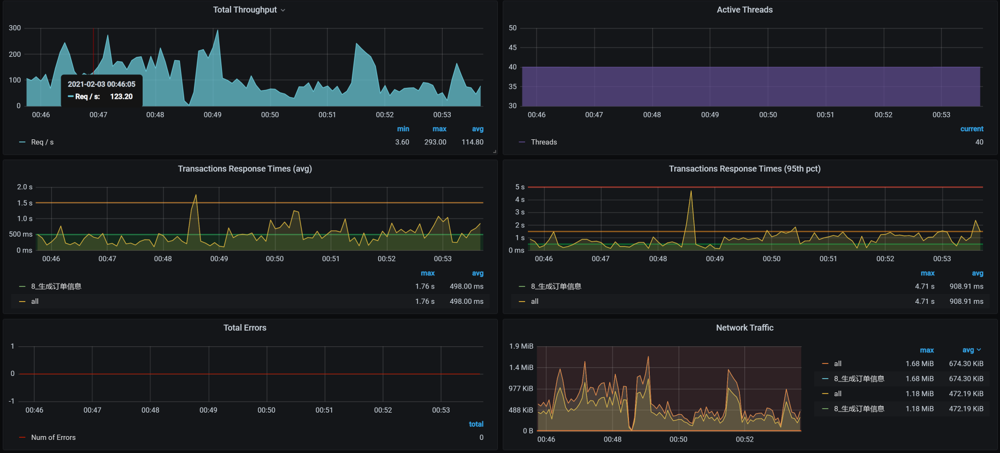
你看，没有出现TPS断裂的情况了，优化效果还是有的，说明那条SQL语句不会再查出太多数据把内存给占满了。
不过，TPS值并没有增加多少，所以我们必须做第三阶段的分析。
第三阶段
这次我们不从全局监控数据来看了，有了前面的经验，我们直接来做定向监控分析。
定向监控分析
因为我们在前面改了SQL，所以在执行SQL之后，我们要去查一下innodb_trx表，看看还有没有慢的SQL。 结果，看到了如下SQL：
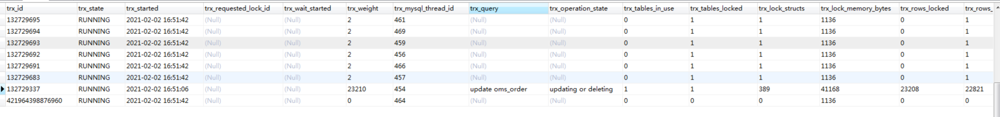
把这个SQL拿出来，看看它的执行计划：
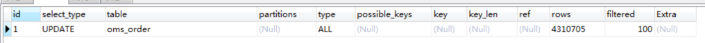
又是一个典型的全表扫描，并且是由一个update使用的。看到这里，你是不是有种想把开发拉出去祭旗的冲动？
由于生成订单信息是一个复杂的接口，我们不急着收拾这个SQL，先把slow log全都拿出来分析一遍。
请你注意，有时候项目执行的场景多了，数据相互之间的影响就会很大，容易导致我们分析的方向不准确。所以，我们最好把slow log都清一遍。反正我通常都会这么干，因为我不想看到乱七八糟的数据。
在清理完慢SQL、重新执行场景之后，我又把slow log拿出来，用pt-digest-query分析了一遍（关于这一点，我们在第16讲中讲过，如果你不记得的话，建议你再回顾一下），看到如下的数据：
# Profile
# Rank Query ID Response time Calls R/Call V/M I
# ==== ============================ =============== ===== ======== ===== =
# 1 0x2D9130DB1449730048AA1B5... 1233.4054 70.5% 3 411.1351 2.73 UPDATE oms_order
# 2 0x68BC6C5F4E7FFFC7D17693A... 166.3178 9.5% 2677 0.0621 0.60 INSERT oms_order
# 3 0xB86E9CC7B0BA539BD447915... 91.3860 5.2% 1579 0.0579 0.01 SELECT ums_member
# 4 0x3135E50F729D62260977E0D... 61.9424 3.5% 4 15.4856 0.30 SELECT oms_order
# 5 0xAE72367CD45AD907195B3A2... 59.6041 3.4% 3 19.8680 0.13 SELECT oms_order
# 6 0x695C8FFDF15096AAE9DBFE2... 49.1613 2.8% 1237 0.0397 0.01 SELECT ums_member_receive_address
# 7 0xD732B16862C1BC710680BB9... 25.5382 1.5% 471 0.0542 0.01 SELECT oms_cart_item
# MISC 0xMISC 63.2937 3.6% 1795 0.0353 0.0 <9 ITEMS>
通过上面的Profile信息我们看到，第一个语句消耗了总时间的70.5%，第二个语句消耗了总时间的9.5%。我们说要解决性能问题，其实解决的就是这种消耗时间长的语句。而后面的SQL执行时间短，我们可以暂时不管。
通常在这种情况下，你可以只解决第一个语句，然后再回归测试看看效果，再来决定是否解决第二个问题。我先把这两个完整的SQL语句列在这里：
1. UPDATE oms_order SET member_id = 260869, order_sn = '202102030100205526', create_time = '2021-02-03 01:05:56.0', member_username = '7dcmppdtest15176472465', total_amount = 0.00, pay_amount = 0.00, freight_amount = 0.00, promotion_amount = 0.00, integration_amount = 0.00, coupon_amount = 0.00, discount_amount = 0.00, pay_type = 0, source_type = 1, STATUS = 4, order_type = 0, auto_confirm_day = 15, integration = 0, growth = 0, promotion_info = '', receiver_name = '6mtf3', receiver_phone = '18551479920', receiver_post_code = '66343', receiver_province = '北京', receiver_city = '7dGruop性能实战', receiver_region = '7dGruop性能实战区', receiver_detail_address = '3d16z吉地12号', confirm_status = 0, delete_status = 0 WHERE id = 0;
2. insert into oms_order (member_id, coupon_id, order_sn, create_time, member_username, total_amount, pay_amount, freight_amount, promotion_amount, integration_amount, coupon_amount, discount_amount, pay_type, source_type, status, order_type, delivery_company, delivery_sn, auto_confirm_day, integration, growth, promotion_info, bill_type, bill_header, bill_content, bill_receiver_phone, bill_receiver_email, receiver_name, receiver_phone, receiver_post_code, receiver_province, receiver_city, receiver_region, receiver_detail_address, note, confirm_status, delete_status, use_integration, payment_time, delivery_time, receive_time, comment_time, modify_time)values (391265, null, '202102030100181755', '2021-02-03 01:01:03.741', '7dcmpdtest17793405657', 0, 0, 0, 0, 0, 0, 0, 0, 1, 0, 0, null, null, 15, 0, 0, '', null, null, null, null, null, 'belod', '15618648303', '93253', '北京', '7dGruop性能实战', '7dGruop性能实战区', 'hc9r1吉地12号', null, 0, 0, null, null, null, null, null, null);
我们先来看第一个语句。这个update语句虽然被调用的次数不多，但是特别慢。这显然不应该是实时接口在调用，那我们就要查一下到底是什么业务调用了这个语句。你看，在这个语句中，update更新的是where条件中ID为0的数据，这看上去就是一个批量业务。
我们再来看第二个语句。第二个insert语句调用次数多，应该是实时交易的SQL。通常，我们会通过批量插入数据来优化insert，所以，就需要调整bulk_insert_buffer_size参数（默认是8M）来实现这一点。因为bulk_insert_buffer_size就是在批量插入数据时提高效率的。我去查询了一下这个参数，确实没有优化过，还是默认值。
这里你要注意一点，在生产环境中，因为Order表中要加索引，所以在架构设计时也最好是主从分离，让update、insert和select不会相互影响。
分析完这两个SQL语句，我们先来查找第一个SQL的来源。通过查找代码，可以看到这里调用了该语句：
orderMapper.updateByPrimaryKeySelective(cancelOrder);
但是，请注意，这个updateByPrimaryKeySelective方法是批量任务中的，而批量任务应该和实时交易分开才是。如果你是作为性能团队的人给架构或开发提优化建议，那你可以这样给建议：
读写分离；
批量业务和实时业务分离。
在这里，我先把这个批量业务给分离开，并且也不去调用它。但是，在真实的业务逻辑中，你可不能这么干。我之所以这么做，是为了看后续性能优化的效果和方向。
做了上述修改之后，TPS如下：
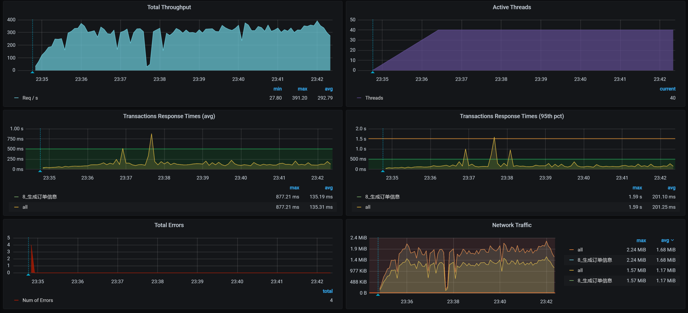
从效果上来看，TPS能达到300左右了，响应时间看起来也稳定了。我们终于可以进入正常的性能分析阶段了，哈哈。
不过，到这里，我们的工作并没有结束，从上图来看，TPS在300左右，根据我们的整体系统资源来考虑，这个TPS还是偏低的，所以这个接口显然还有优化的空间。所以，在下节课中，我们接着来唠。
总结
在这节课中，我们做了三个阶段的分析优化。
在第一阶段中，我们修改了JDBC池，虽然TPS有上升的趋势，但是，新问题也同样出现了：TPS非常不稳定，还有断断续续的情况。
在第二阶段中，我们分析了内存溢出的问题，定位出了原因并优化了内存问题。虽然我们在TPS曲线上明显看到了优化的效果，但仍然没有达到理想的程度。
在第三阶段中，我们分析定位了SQL的问题，这是非常合乎逻辑的。因为我们在第二阶段中修改了SQL，所以到了第三阶段，就要直接到数据库中做相应的定位。从结果上看，效果不错，TPS已经有明显正常的趋势了。不过，你要注意的是，当批量业务和实时业务同时出现在同一个数据库中，并且是对同样的表进行操作，这时，你就得考虑一下架构设计是否合理了。
总之，在这节课中你可以看到，当SQL查询出来的数据到了应用内存的时候，导致了内存的增加。而应用内存的增加也增加了GC的次数，进而消耗了更多的CPU资源。
课后作业
最后，请你思考两个问题：
- 为什么JDK中看到VM Thread线程消耗CPU高，会去查看内存消耗是否合理？
- 在MySQL中分析SQL问题时为什么要先查询innodb_trx表？
记得在留言区和我讨论、交流你的想法，每一次思考都会让你更进一步。
如果你读完这篇文章有所收获，也欢迎你分享给你的朋友，共同学习进步。我们下一讲再见！
© 2019 - 2023 Liangliang Lee. Powered by gin and hexo-theme-book.